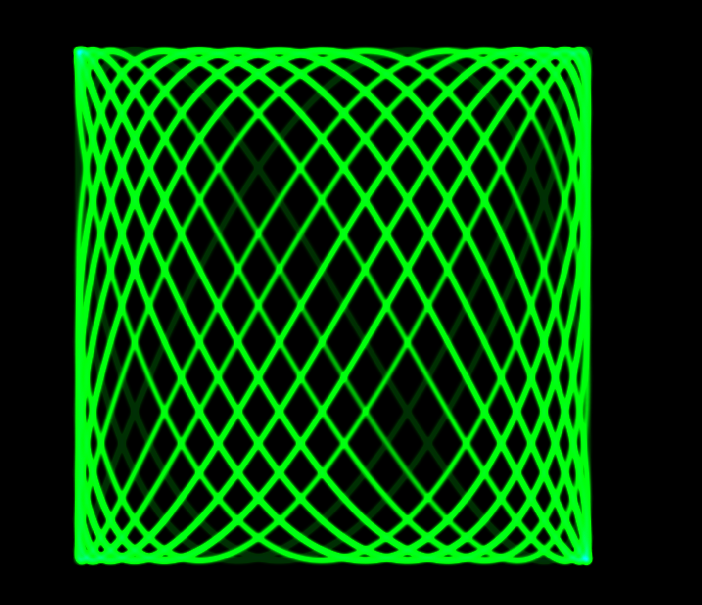
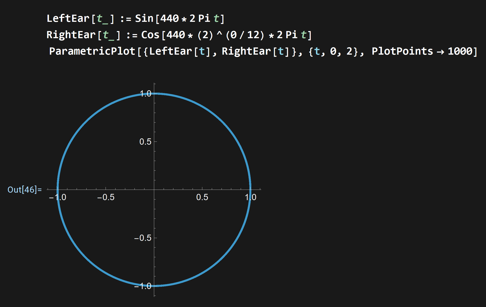

Oscilloscope Music; Why and How

Oscilloscope Music: Why and How?
With the endless genres of music that exist in today's society, discerning sounds can be a difficult task. As different sound sources interact within the mix of a single song, picking out a particular instrument, or identifying what a certain "noise" is can take a lot of intentional listening. This blogpost aims to ask how we can "quantify sounds," And how we can not only generate sounds via frequency, but also visualize these with the use of an oscilloscope, such as the one illustrating a musical interval of a ninth, listed above.
Basic Definitions
Simply put, a frequency is the rate at which something occurs; This is a basic definition taught when learning the structure of a sinusoidal function in trigonometry, such as sine or cosine. It is also mentioned in physics classes when discussing harmonic motion. The underlying principle in both cases is that frequency is related to the period of an event.
Frequency is also used to denote pitches in most forms of modern Western music, where musical intervals are based on a twelve-tone scale. A note or pitch in the musical sense is a specified frequency. For a given pitch, the following table has corresponding frequencies, each of which is one "semitone" apart, or differing by a ratio of $2^{1/12}$.
Note that the frequency of an octave (for any specified frequency $f$) is going to be double of the original frequency, $2f$, and can be observed in the table for C4 and C5. (Double the frequency for C4! Is it the same as C5?)
| Pitch | Frequency (Hz) |
|---|---|
| C4 | 261.63 |
| C#4 | 277.18 |
| D4 | 293.66 |
| D#4 | 311.13 |
| E4 | 329.63 |
| F4 | 349.23 |
| F#4 | 369.99 |
| G4 | 392.00 |
| G#4 | 415.30 |
| A4 | 440.00 |
| A#4 | 466.16 |
| B4 | 493.88 |
| C5 | 523.35 |
Therefore, to modulate any given frequency, we can multiply that specified frequency by $2^{1/12}$, and holds true for all subsequent octaves.
Multiple Ways to Play a Tune
Knowing a bit more about how frequencies operate in the musical sense, one could simply hard code each frequency in Wolfram to listen to these tones, but it is worth noting that Wolfram has a large sound library underneath the breadth of plotting functions available, allowing one to be incredibly granular when approaching sound design in Mathematica. Multiple notes can be played at a time, as well as being able to sequence a string of notes, allowing for the forming of simple melodies. The length of each note can also be set to played for a predetermined amount of time when programming. All of these features allow for some degree of freedom in sound design.
As aforementioned, Wolfram has a sound library built into the program, and has predefined musical pitches already. For example, the call in Mathematica, Play["A4"], will generate a tone defined to be 440 Hz. It is even possible to index through a table of notes, playing a composition (I ran into a runtime issue trying this though so exercising caution is advised.)
Playing and Plotting Functions from Mathematica
Triggering sounds with different frequencies can be produced using trigonometric functions in Mathematica as well as the aforementioned methods. For example, if we create a basic sine wave, using $\sin(2\pi nt)$ or $\cos(2\pi nt)$ will create a frequency oscillating at $n$ Hertz.
Modifying this further can creating a "warbling" effect on the pitch, making it vary for a more sci-fi sound. (Multiplying two trigonometric functions together can achieve this effect)
A quadratic function will create a "slide whistle effect," causing the pitch generated to have a less linearly incrementing sound.
[Untested] $\ln(x)$ or $1/x$ can possibly have an opposite effect of the "slide whistle" crescendo previously generated.
Locating and Connecting to the Oscilloscope
As far as locating an oscilloscope there were mainly two options: Scouring Facebook Marketplace/OfferUp, or, the more convenient option of using my own campus's oscilloscope; On campus, there is an oscilloscope in the SIIL Maker Studio on the second floor of the library. Since I already have certifications, and have already talked with the technicians that work there, they were willing to let me use the scope, provided that I have the necessary cables.
There exist a few options as far as interfacing with the oscilloscope itself; Either using proper oscilloscope probes that connect to the scope, or the use of an auxiliary/RCA split cable with two BNC adaptors. This would look like a white/red split cable similar to those on CRT TVs with the red, white, yellow inputs. Either way of connecting will end up with the audio signal path as follows:
laptop -> aux/rca cable -> bnc adaptors -> oscilloscope
It is important to note that a stereo signal is required for visualization, and passing the same signal to both left and right channels of the oscilloscope would produce just a straight line.
However,
the oscilloscope in the Maker Studio was having a hardware error. I tried initializing the oscilloscope after powering it on, but the screen remained dark. Unperturbed, we will visualize the fruits of our labor digitally using free software available online.
Visualizing the parametric trig functions as shapes
Using our sounds from before, we can visualize them natively using Mathematica:

Notice that in this case, the left and right ear have different functions, but have the same frequency listed in the argument of each function, and yields a circle when plotted.
Now let's bring back our ninth interval as an example of the scope in action; We can visualize different types of waveforms, or any audio file for that matter and can also export our sound files from Mathematica, and from there, import them into the free "Virtual Oscilloscope".
Finally, listed below is a gif of the ninth interval from the beginning of our blogpost.
we are fr in the matrix pic.twitter.com/SFgMoRqyJQ
— jared (edgar) (@jared_) May 2, 2026